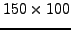
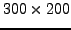

Let us take one of the above examples and modify it a bit.
Gan_Image *pImage;
/* create image */
pImage = gan_image_alloc_gl_s ( 150, 100 );
/* convert an existing image to new format, type & dimensions */
gan_image_set_rgb_uc ( pImage, 300, 200 );
This code fragment allocates an image as a  grey-level short
integer image, and then converts it into a  RGB unsigned
character image. This feature allows the same image to be used as the
result of several different computations, easing the burden of keeping
track of a large number of images, as well as potentially saving memory.
There are also higher level functions that set an image to a format, type and dimensions all selected by variables. For instance
Gan_Image *pImage;
/* create image */
pImage = gan_image_alloc_gl_s ( 150, 100 );
/* convert an existing image to new format, type & dimensions */
gan_image_set_format_type_dims ( pImage, GAN_VECTOR_FIELD_2D, GAN_FLOAT,
200, 50 );
sets the image pImage to be a 2D vector field (2D image of 2-vectors),
float type and dimensions 200 by 50. There are also routines for setting
the format, type or dimensions, leaving the other attributes fixed.
So for instance
gan_image_set_format_type ( pImage, GAN_VECTOR_FIELD_2D, GAN_FLOAT );
sets just the format and type of the image, leaving the dimensions unchanged,
while
gan_image_set_type ( pImage, GAN_FLOAT );
sets only the image type, leaving the format and dimensions unchanged.
Finally
gan_image_set_dims ( pImage, 200, 50 );
changes only the image dimensions.
Error detection: All the above routines return NULL and invoke the Gandalf error handler if they fail. The most likely failure mode is failing to reallocate the image data, i.e. an internal realloc() call failing.